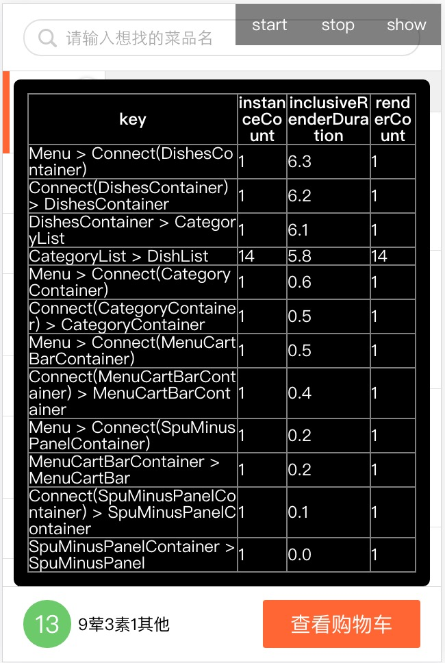

React文档阅读
quick start
Tutorial
建立一个模块
我们可以使用React.createClass()来创建一个React模块。我们通过一个JS对象传了一些方法给这个函数，最重要的方法是render，返回了最终会变成HTML的部分。
render里面的div不是真正的DOM节点，他们是React的div components的实例化，不直接产生HTML，所以XSS保护是默认的。
我们使用ReactDom.render()来实例化入口框架，这个方法必须在最下面模块定义好了才执行，这个方法来真正的产生DOM，其他的平台的话有其他的生成方式，比如React Native。
HTML tags在生成的时候会调用React.createElement(tagName)来创建。
this.props
由父模块传递给子模块的数据，我们可以在子模块中通过this.props来访问得到。
dangerouslySetInnerHTML
如果我们想要直接插入html进入文档中(这一点需要自己来保证XSS的问题)，我们可以使用dangerouslySetInnerHTML这个属性来添加。
遍历输出
var commentListNodes = this.props.comList.map(function(comment){
return (
<Comment author={comment.author} key={comment.id}>
{comment.text}
</Comment>
);
});
我们可以通过map方法来得到数组，然后使用的时候直接{commentListNodes}就能输出了。
state
目前，依赖于props，所有的组件都是被刷新了一次，props是不变的，这个被父组件传过来的且被父组件拥有。所以出现了state这个属性，我们使用这个可变的私有的值来改变状态。我们可以使用setState()来rerender这个组件。getInitialState这个方法会在初始化的时候执行一次来初始化组件的初始状态。
componentDidMount
这个方法会在组件第一次初始化之后被调用
控制组件的输入
这里推荐的也是在this.state里面存这个value，在input的onChange时调用修改this.setState来改变。包括submit方法的话就是监听onSubmit。我们可以先调用e.preventDefault()来阻止默认行为。
从子组件传数据给父组件
我们可以在调用子组件的时候，将callback绑在props上，然后调用子组件的props上面的方法来调用父组件相应的方法。
我们在写一些回调的时候要绑定好this
$.ajax({
url: this.props.url,
dataType: 'json',
type: 'POST',
data: comment,
success: function(data) {
this.setState({data: data});
}.bind(this)
});
//就像这样绑定好this
Tip
这里还给了一个小建议，我们在添加了某一项之后，可以直接加进list，如果ajax失败了再重置回去
Thinking in React
创建react的步骤
我们分解成react要尊崇单一职责原则，尽量把交互与展示分开，展示也根据种类分细点
然后我们先不考虑交互，不考虑传输的数据，先创建一个静态的项目出来
react是单项绑定的
然后我们要计算出最小的state我们需要什么，通过父组件传的，不变的，能够通过其他state计算得到的都不应该是state
我们需要得出哪一块需要数据，如果我们实在没法区分的时候，我们可以专门在其上用一个组件来专门管理state
社区资源
这个就先不看了
Guides
why react
React就像是MVC的view层，react主要解决的是大项目数据不断变化的场景。我们只需要修改数据，react会帮我们进行所有的UI更新。
他只更新被改变的部分。
Displaying Data
他的组件是很封闭的，所以更容易重用，更容易测试以及分离相关。
Components更像是方法，接受props和state来生成HTML。(react模块只能生成一个简单的根节点，如果想要返回大量的节点的话，得用一个根节点包裹起来)
React允许我们用js对象的形式来创建HTML，如`React.createElement('a',{href:''},'Hello!')。为了简便，我们还可以使用createFactory的形式来创建。但是使用比较少，还是JSX比较方便。
JSX时间上只是一种语法，并不是使用React的必需品，不用的话，就得像上面一样使用create的形式慢慢创建。
Jsx in Depth
我们在JSX里面使用HTML tag的时候，用小写的形式。如果是HTML属性的话，使用驼峰的写法。并且因为class和for都作为XML的本身的属性名，所以我们分别用className和htmlFor来代替。
我们在版本0.11以上可以使用namespaced components，就是在某个组件之下进行申明。
当我们在属性里想要使用js的表达式的时候，用一个大括号包裹起来，替代双引号。
boolean attribute，如disable，readonly，checked，required直接省略属性值和{true}一样，如果不写和值为{false}效果一样。
js表达式也可以用来申明生成哪个子节点，比如{ifShow ? :
注释的话使用这种形式是可以的{/* */}。
Jsx 延展属性
我们可以使用延展属性，来讲一个对象所有的属性复制到另一个对象上。我们可以多次使用，或者和普通的属性一起用，不过得注意顺序，后面的会覆盖前面的。这里是React直接支持。
var props = {foo:"check"}
var component = <Component {...props} foo='name'/>
console.log(component.props.foo);
//name
延展属性在ES6的效果主要是将数组类型的一个个推出来，就像是apply方法一样，支持情况当然不好啦，但是Bebal可以转。
JSX 一些陷阱
如果想插入·这种符号的话，我们可以直接插入，但是如果想插入动态的话，我们就会以这样的形式包装起来{'·'}，然后就没法显示了
我们可以直接以UTF-8的形式写个点，或者我们可以写unicode的编码\u00b7，或者我们用个span包起来，例如{['First ', <span>·</span>, ' Second']}，或者我们可以直接dangerouslySetInnerHTML=这样来强行插入原始的HTML。
原生的HTML的自定义属性必须以data开头，自定义的节点的属性可以是任意的，aria-hidden这种aria-开头的属性是可以正常render的。
交互以及动态UI
他自动把方法绑定在模块上，是使用的事件代理，完全绑在了根元素上。
模块就是状态机。
通过setState来将data merge进入this.state中，这里的merge只有一层，如果想深层次的merge，使用那个immutability helpers
所以我们应该有许多stateless的模块来负责渲染，然后在其上有一个stateful的模块来将state通过props传给这个模块。
计算过的数据，react模块以及与props里面重复的数据都不应该在State里面出现。
Multiple Components
动机主要是将关注点分离。
组件自己没法修改props，这样可以保证组件是始终如一的。Owner负责修改以及传递状态。
注意Owner和Parent是不一样的，<Parent><Child/></Parent>这个是parent，而owner是React.createClass。我们可以在Parent里面使用this.props.children来操作。
我们最好不要用hide来隐藏，我们应该直接让他们消失，对于list生成的我们需要给每一个一个唯一的key来保证他们正常且不别破坏。
数据流是单向绑定的。
JS执行的速度是非常快的，所以基本上没有性能瓶颈。主要的瓶颈是DOM的渲染，而这点React帮我们通过批处理以及脏检测来优化过了。
当我们真的感觉到性能问题的时候，我们可以重写shouldComponentUpdate来让他返回false就可以了，但是其实不是很需要。
Reusable Components
设计接口的时候，将那些简单设计的元素分解为可重复使用的，良好设计的接口。下次就可以复用了。
为了保证我们的组件被正确的使用，我们可以通过设置propTypes来限制用户传入的数据，但是这个东西只有在development模式才会有效。
default prop values
我们可以在用户没有传的时候设置一个默认值，调用getDefaultProps就可以设置默认值了，如果用户设置过的话，就会被忽略
Transferring Props: A Shortcut
有的时候我们想要从父元素传递props给子元素，我们可以直接使用spread syntax来简写，比如直接{...this.props}这样。
Mixins
当不同的组件拥有相同的功能的时候，我们可以使用mixins，这个就是将组件的功能进行抽离的一个方法，还蛮有意思的。使用的时候加个mixins: [SetIntervalMixin]就可以了。
一个很重要的有点在于，如果有多个Mixin在同一个生命周期的方法执行，那么他们都会被执行，并且会严格按照申明的顺序执行。
ES6 Classes
我们也可以使用es6的class语法来声明组件，唯一不同的是没有getInitialState这个方法，我们只能在constructor里面手动初始化state。
而且方法如果想要在render里面以this来调用的话，必须在constructor里面bind一下this。
还有propTypes和defaultProps得在外面申明，而不是写在里面。下面的例子
export class Counter extends React.Component {
constructor(props) {
super(props);
this.state = {count: props.initialCount};
this.tick = this.tick.bind(this);
}
tick() {
this.setState({count: this.state.count + 1});
}
render() {
return (
<div onClick={this.tick}>
Clicks: {this.state.count}
</div>
);
}
}
Counter.propTypes = { initialCount: React.PropTypes.number };
Counter.defaultProps = { initialCount: 0 };
关于this的绑定，我们可以在调用的时候绑定，也可以使用箭头，不过最好像上面一样在constructor里面绑定，这样只绑定了一次。
<div onClick={this.tick.bind(this)}>//bad
<div onClick={()=> this.tick()}>//bad
ES6的语法的话没有Mixins的支持。
Stateless Functions
如果组件只是一个简单的js function的话，我们可以使用这种语法
function HelloMessage(props) {
return <div>Hello {props.name}</div>;
}
//或者直接使用下面的箭头语法
const HelloMessage = (props) => <div>Hello {props.name}</div>;
这种比较适合没有lifestyle方法的，不存有内部状态，我们仍然可以设置propTypes和defaultProps。就像ES6的设置一样。我们的项目应该较多的是stateless的模块。
Transferring Props
我们想要传递给子模块的时候加上某个属性的话，可以直接使用spread语法。<Component {...this.props} more="values" />
如果没有用jsx的话，我们可以使用ES6的语法Object.assign和underscore的extends。
如果我们在某一层组件的时候截断某个属性，然后将其他属性传下去的话，可以使用other的语法。
function FancyCheckbox(props) {
var { checked, ...other } = props;
var fancyClass = checked ? 'FancyChecked' : 'FancyUnchecked';
// `other` contains { onClick: console.log } but not the checked property
return (
<div {...other} className={fancyClass} />
);
}
ReactDOM.render(
<FancyCheckbox checked={true} onClick={console.log.bind(console)}>
Hello world!
</FancyCheckbox>,
document.getElementById('example')
);
这样子的话，other就会只包含除了checked以外的属性了，主要是因为checked这个属性在html的结构有特殊的意义，而在自定义的组件没有这个效果。
我们也可以使用rest properties，var { x, y, ...z } = { x: 1, y: 2, a: 3, b: 4 };，不过在webpack里面得加上transform-object-rest-spread这个plugin。
不用jsx的话，我们可以使用underscore的omit来删属性和extends来扩展。
Forms
与HTML对应的，value是被input和textarea支持的。
checked是被input的checkbox和radio支持的。
selected是被options支持的。
注意HTML中，textarea的值是被设置在两个标签之间，REACT是在value属性上。
onChange事件会在input和textarea的值发生改变的时候触发，还有input的checked改变，以及option的selected改变的时候。
如果我们在render方法里面写死了input的value，那么我们输入会被忽视的，只有value改为state的可变的值才行。
我们可以使用defaultValue给input，textarea，select(这个支持multiple)，然后radio和checkbox的值是defaultChecked，注意这个值只能够在初始化的时候。
Working with the browser
react快的原因是因为他不直接与DOM交流，render方法返回的对DOM的描述，react会计算最快的更新页面的方法。
事件系统完美处理。
当我们想要调用html本身的命令的时候或者接触真实的DOM树，我们可以使用refs来控制。
Component Lifecycle
模块有3个主要的阶段：
- Mounting：组件准备插入DOM中
- Updating：组件更新
- Unmounting：组件从DOM中删除
Mounting提供了getInitialState()和componentWillMount()和componentDidMount()。
Updating提供了componentWillReceiveProps(这个方法的价值在于组件接收到新的props的时候，我们可以比较新老的props，然后setState。这个方法在初次mount的时候并不会被触发，因为这个时候没有老的props)，shouldComponentUpdate，componentWillUpdate(组件即将执行更新之前，我们无法执行setState方法)，componentDidUpdate(更新发生之后会立即触发)。
Unmounting提供了componentWillUnmount()在组件被移除之前触发。
Mounted好了的复合组件也提供了component.forceUpdate()来强行重新刷一次。
react支持IE9以及以上，但是我们可以引入es5-shim和es5-sham来让老版的支持，这其实取决于我们自己。
Refs to Components
构建组件完了，你可能想要在render的component实例上调用方法。大多数情况下应该是用不到的，因为正常的数据流应该是父组件传props给子组件的。
jsx并不返回一个component的实例，他只是返回一个ReactElement（这只是一个告诉React这个组件应该是什么样子的轻量的）。
我们想要调用某个组价实例的方法，只能在最上层的component使用(就是ReactDom.render生成的东西)。在组件的内部，我们应该自己处理他们之间的状态，或者使用另一种方法来得到ref(字符串属性或者回调方法属性)。
The ref Callback Attribute
ref属性我们可以直接写成一个回调方法。这个方法会在组件结束mount之后立即被触发，参数是引用的组件。我们可以直接使用这个组件或着把他存了等到以后使用。
这个方法会在componentDidMount之前触发。
render: function() {
return (
<TextInput
ref={function(input) {
if (input != null) {
input.focus();
}
}} />
);
},
render: function() {
return <TextInput ref={(c) => this._input = c} />;
},
componentDidMount: function() {
this._input.focus();
},
当我们将refs添加给div的时候，我们得到的是DOM元素，如果给自定义的组件绑定，我们得到的是react的实例。如果是我们自定义的组件，我们可以调用任何在他的class里面定义的方法。
当组件unmounted或者ref改变的时候，老的ref都会以null来被调用，所以说当ref update的时候，在被组件实例为参数之前，会立即调用一次null为参数的。(这点需要注意的)
The ref String Attribute
我们也可以简单的加一个string的ref属性，然后我们在其他的事件处理里面就可以this.refs.xx来调用了。
Tooling Integration
作者希望react成为环境无关的，推荐了一些工具来让我们更好地使用各种种类的语言。
Language Tooling
我们写成JSX的文件的话，我们要用babel先转化为纯粹的react的语法。Flow和TypeScrip也都支持JSX了。
Package Management
我们可以在commonjs系统browserify或者webpack里面直接npm的形式来引入react和react-dom。
Server-side Environments
react并不是真的依赖于DOM，所以可以后端来执行，将HTML吐在页面上，如果是nodejs的话，是可以ReactDOMServer.rendertoString的。
如果是java的话，可以依赖于Nashorn这个JS的执行器来转化JSX。
Add-ons
这是一些react提供的功能插件，这些相对于核心来说变化的会比较多一些。以下的是一些实验性质的：
- TransitionGroup and CSSTransitionGroup：解决那些不容易实现的动画，例如在组件移除的时候的动画。
- LinkedStateMixin：这个是将form的属性与state绑在一起的插件，如果form比较大的话，这个还是很关键的。
- ...还有很多下面会慢慢介绍的
Animation
react提供了ReactTransitionGroup这种比较级别比较低的api来让我们使用，还提供了ReactCSSTransitionGroup来让我们更好的使用css实现的动画。包括进入和离开页面的动画。
当我们在list添加的时候，我们可以使用ReactCSSTransitionGroup的enter和leave来实现。他会根据key的区别来判断是不是新添加的，然后就会像我们通常触发动画一样来toggle css的class。
组件初始化渲染的话，我们可以使用transitionAppear这个来添加动画。注意初始化渲染的时候，所有的children是appear，然后后来添加进的就是enter了。
使用ReactCSSTransitionGroup我们得不到动画结束的通知，也无法为了动画加上更复杂的逻辑，想定制化，就得使用ReactTransitionGroup了。
如果想禁掉某些动画，我们可以设置为false。
ReactTransitionGroup
这个玩意功能强大的多，他提供了在动画生命周期里能够执行的方法。使用到的时候再思考吧。
Two-Way Binding Helpers
ReactLink是个方便的在react里面实现双向绑定的工具。但是这个在新版本被废弃了，还是推荐通过onchange来设置值。
双向绑定实际上强制性的要求了DOM完全等于react的state，这点虽然其实有很广的范围，React提供了ReactLink来帮我们简单的封装了setState和onChange方法。他并没有实际上改变react的单项数据流。最好别用~
Test Utilities
React提供了非常棒的测试语法。配合Jest这层依赖于Jsdom的，我们可以写脚本测试整个的渲染以及事件逻辑。
我们可以直接写脚本模拟点击，模拟输入，模拟键盘事件。
类似于ReactTestUtils.Simulate.click(node);
我们可以renderIntoDocument然后进行各种类型判断以及事件触发检验。
不依赖于Jest，不依赖于DOM，我们也可以render组件，使用如下的Shallow rendering。
Shallow rendering
使用这个组件我们可以脱离DOM来渲染组件，但是这只是一层渲染，子组件不会被渲染。我们只能够检查output的信息。功能其实还是很少的。refs也不支持，function也不支持。
Cloning ReactElements
cloneWithProps这个组件被废弃了，现在只建议使用React.cloneElement。就是在想要复制一个element。并且在他的原props上进行一些修改。
Keyed Fragments
有时我们需要将两块元素换位置，按照我们一般的写法，我们会单纯的给他们换位置，于是这些元素就会经历unmount和remount两个步骤。这是因为我们没有给他们每个模块一个单独的key。我们如果使用createFragment就可以让元素不执行unmount了。
Immutability Helpers
(这个add-on的好处在于我们可以改变外面的壳子为一个新对象，然后对象里面的属性会自动重用老的。等于就是一个浅复制，然后我们就可以在子组件里面使用shandowCompare来比较。)
我们有时想要改变对象的里面的某个属性，然后其他的不想改变。例如下图。
var old = {a:1,b:{c:1,d:{e:12}},r:{f:1}};
var newData = Update(old,{b:{c:{$set:2}}});
console.log(old === newData);//false
console.log(old.b === newData.b);//false
console.log(old.b.d === newData.b.d);//true
console.log(old.r === newData.r);//true
PureRenderMixin
就是如果你的组件是pure的，就是说给不变的props和state，render同样的结果。可以直接mixins这个插件。其实就是shouldComponentUpdate里面返回了一个shandowCompare而已。
Performance Tools
(这个是个非常好的提供性能的工具，可以让我们查看一定的操作之后，我们页面组件重新渲染的次数，可以让我们进行组件的优化，使用可以参照本项目DEMO里的那个debug-panel，这个是勐喆开发的一个查看工具，内部调用了start，stop，printWasted，getLastMeasurement等方法)

这里有个Perf.printWasted，这个是react内部做的深层次比对，发现没有变化，于是DOM没有触及，这一块的浪费我们可以在shouldComponentUpdate里面通过return false来进行阻止。
Shandow Compare
这个是个最浅层的比较，会对对象的每个属性进行严格等于的比较，然后都相等就返回false，有改变的话就返回true。代表着需要更新。
Advanced Performance
人们使用react的原因在于他们希望网站是快速的，并且是响应的。每次state的改变导致重新render整个子树让人们想知道这样是否影响了性能，React使用了一些聪明的技术来减少需要更新UI时的DOM操作。
首先线上环境要使用压缩过的production build
Avoiding reconciling the DOM
React使用的是虚拟DOM。这种平行的关系阻止了React直接创建和接触真实的DOM。每次React的props和state改变的话。React都会生成一个新的虚拟DOM来和老的比较，如果不相等的话，React才会尽可能小的改变虚拟DOM。
在这之上，React提供了一个组件的生命周期的方法，shouldComponentUpdate，这个方法来阻止虚拟DOM比较以及可能的最终的DOM的更改。让开发者来缩短整个过程。这个值默认返回true，默认执行比较以及更新。
我们很多时候的比较其实只是引用地址的比较(shandow compare)，这个基本上都是true的，因为我们是在同一个对象上修改的。
我们可以使用Immutable这个东西来创建不同的对象，或者使用Object.assign来做这件事情。
Context
React让我们很容易的跟踪数据流的走向，因为他都是沿着组件树的结构一层层props传递下去的。但是有时我们不想要一层层的传递下去，我们可以使用Context这个东西。(这个是个实验性质的属性，将来可能会修改)
我们在父组件中(context的提供者)申明好childContextTypes和getChildContext。然后我们在子组件里面申明好contextTypes就可以拿到相关的数据了。如果不申明，那this.context就会是一个空对象。
还是建议不要使用这个东西，用了的话，生命周期函数基本都会变化，会新加一个参数nextContext。会让组件无法被重用。
REFERENCE
Top-Level API
React
react是对react library的入口，如果我们提前引了这个script。react就是global的。我们如果是Commonjs的项目，也可以直接require来引入。
React.Component
粗略的看过
Component API
setState
实际上是一个shandow merge，这个是我们主要使用的更新的方法，我们可以传一个二参在setState完成以及以及一个组件re-render的时候触发。(注意永远不要手动改变this.state的状态，因为接下里调用setState可能会导致冲突)
forceUpdate
这个方法就是强行刷新，跳过本组件的shouldComponentUpdate，使用到的组件还会执行shouldComponentUpdate的，这个方法主要是为了有些我们的组件渲染不只是一句props和state的时候使用。建议还是不要使用这个东西。
其他的都被废弃或者即将废弃
Component Specs and Lifecycle
当我们提供了一个React.createClass的时候，我们必须得提供一个含有了render的方法的对象。我们也可以可选的包含一些生命周期方法。我们当然也可以使用ES6的继承，区别前面也已经提过了。
render
这个方法不应该改变组件的props或者state，应该是纯净的渲染，我们可以通过返回null或者false来表示我们不需要他们的渲染。
getInitialState
这个方法只有React.createClass才会有，如果我们使用extends那种，我们就可以在constructor里面进行初始化。
getDefaultProps
这个方法会执行一次并且被保存下来，用来初始化。而且必须是parents没有设置过，才会被设置。
propTypes
这个可以用来检验props的输入
mixins
这个等于是个小的继承的写法
statics
我们在这个里面可以申明静态方法，注意这个里面的方法我们没法访问到props或者state。
displayName
这个主要是用在debug的时候，JSX会默认设置一下的。
Lifecycle Methods
各种各样的方法会在组件的各个时间段执行
componentWillMount
这个方法会在render之前被执行一次，只执行一次，我们可以设置state，这个客户端和服务器端都会执行
componentDidMount
这个方法在客户端会执行一次，第一次render之后会执行一次，只执行一次，在这里我们使用children的refs了。
componentWillReceiveProps
在组件接收到新的props的时候被触发，注意第一次不会被触发。
这个方法是让我们在接收到新的props的时候，在render触发之前还有一个机会通过setState来改变state。
shouldComponentUpdate
这个方法是在render之前当新的props或者state接收到的时候，这个方法初次initial的时候不执行，forceUpate的时候也不执行。
使用这个我们可以通过return false来阻止render。如果shouldComponentUpdate return 了fasle，componentWillUpdate和componentDidUpdate都不会触发了。
componentWillUpdate
这个方法会在我们更新的render之前执行，初次渲染不会执行。（注意我们这个方法里面没法调用了setState了，如果我们想要因为props的改变动state的话，我们就在componentWillReceiveProps里面执行这个操作）
componentDidUpdate
这个方法会在update执行之后，初次渲染不被执行，这是个机会我们去操作DOM。
componentWillUnmount
这个在Component被移除DOM的时候执行，我们可以使用这个方法来清理一些定时等等。
Tags and Attributes
FLUX
这个也先不管....
TIPS
这里主要就是一些细节的点了
Inline Styles
在React里面，我们想要使用行内式样的话，必须以对象的形式申明，而且必须是驼峰式，行内样式本来就不推荐，这里也就了解一下感觉就够了。
If-Else in JSX
JSX里面我们没法使用if else，因为JSX只是一个来处理函数调用以及对象构建语法糖，最多只能处理3目运算符。如果想要使用if else也可以，只要在JSX外面使用就好了。或者写成一个自执行的匿名函数调用。
Self-Closing Tag
就是说react component都可以自封闭，包括div什么的，因为他们本身也就是react的component。
Maximum Number of JSX Root Nodes
目前，render里面只允许返回一个root nodes。如果我们想要返回多个的话，我们只能用一个将他们包装起立。
Shorthand for Specifying Pixel Values in style props
就是说在行内的style属性中，当我们写一些长度属性的时候，React会帮我们自动加上px这个单位，这里也介绍了一些不会加的，不过行内的用处不大，这里了解下就好了。
Type of the Children props
我们在componentDidMount中可以通过this.props.children来访问到组件内部包裹的组件。如果包裹的数量大于1的话，这个值就是一个数组，如果是1的话，这个值就是一个单个的值，并没有用数组包起来，所以提供了React.Children utilities来访问。
Value of null for Controlled Input
我们正常给input设置了value之后我们是无法修改他的值的，但是我们把input的value设置为null或者undefined之后，input就变的可以编辑状态了(但是我这种赋值并没有价值，这只是一种错误的状态)
componentWillReceiveProps Not Triggered After Mounting
这个方法并不会在初次mount的时候执行，因为他的作用在于比较老的props和新的props，如果老的没有的话，就不会触发。
Props in getInitialState Is an Anti-Pattern
我们在getInitialState里面使用props来设置state需要注意一下，因为getInitialState这个方法只会在初始化的时候被执行一次。
DOM Event Listeners in a Component
就是说我们最好在componentDidMount这个方法执行之后进行DOM上事件的绑定，因为这个时候渲染已经完成了。
Load Initial Data via AJAX
让我们在componentDidMount里面拉取ajax数据，然后在UnMount方法里面abort掉这个request。
False in JSX
false在jsx里面的渲染结果会有些不同，比如false作为id或者value等等的值就会被解析为字符串“false”，如果在div中间使用{false}，就会得到一个空白的div。
Communicate Between Components
想要父组件与子组件交流，很简单的传输props就可以了，想要子组件与父组件交流，只需要func.bind(this,i,props)这样绑定一下就好了。
如果是没有父子关系的组件之间的交流，我们可以设置自己的时间系统，在componentDidMount里面订阅，然后在willUnmount里面取消订阅。
或者按照flux来解决。
Expose Component Functions
将方法暴露给父组件来调用，其实就是父组件创建的时候给个ref值，然后在父组件里面使用this.refs.item1.func()就可以调用子组件的方法了。
this.props.children undefined
children这个属性并不指的是自己的render方法里面的子，而是调用这个组件里面传入的子。注意调用我们自己包装的组件时，在里面包的div并不会渲染，除非我们自己在组件里面的渲染中调用{this.props.children}来手动渲染。
Use React with Other Libraries
我们完全可以不整个的使用react，我们可以在shouldComponentUpdate里面手动return false。我们可以在DidMount里面进行一些事件的绑定。在DidUpdate进行一些处理。但是这是件tricky的事。
Dangerously Set innerHTML
一般React会帮我们编码一下吐到页面上，基本不会有XSS攻击，但是有时我们想要自己生成html吐到页面上，react提供了dangerouslySetInnerHTML这个function，传入的数据是{__html:'haha'}，注意这个就是有风险的，而且我们基本完全可以避免，除非一些非常特别的case。